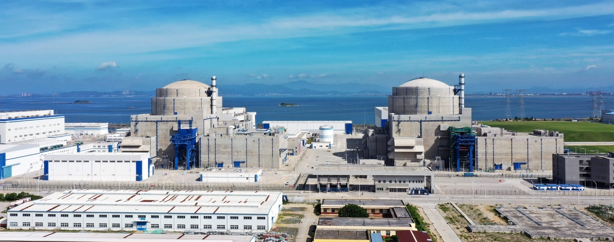

地理位置
中国福建省福清市
核电厂历史
福清核电厂是福建省最大的核电厂，共有6台机组，其各机组建成时间如下：
1号机组于2008年11月21日开工建设，于2014年8月20日并网成功，并在2014年11月22日正式商转。
2号机组于2009年6月18日开工建设，于2015年8月6日并网成功，并在2015年10月16日正式商转。
3号机组于2010年12月31日开工建设，于2016年9月7日并网成功，并在2016年10月24日正式商转。
4号机组于2012年11月17日开工建设，于2017年7月29日并网成功，并在2017年9月17日正式商转。
5号机组于2015年5月7日开工建设，于2020年11月27日并网成功，并在2021年1月30日正式商转。
6号机组于2015年12月22日开工建设，于2022年1月1日并网成功，并在2022年3月25日正式商转。
堆型与数量
截至2024年11月，福清核电厂共拥有4台运行中的CPR-1000型号压水堆机组（1-4号）。除此之外，它有2台运行中的HPR-1000压水堆机组（5，6号）。
发电基本原理
压水堆（Pressurized Water Reactor）是采用高压水来冷却核燃料的一种反应堆，其工作原理为：主泵将120～160个大气压的一回路冷却水送入堆芯，把核燃料放出的热能带出堆芯，而后进入蒸汽发生器， 通过传热管把热量传给二回路水，使其沸腾并产生蒸汽，常在一回路水中加入硼酸，用以控制反应性的慢变化。之后，二回路产生的高压蒸汽会推动汽轮机发电，再经过冷凝器和预热器进入蒸汽发生器，完成二回路水循环。
图1：压水堆示意图
荣誉与贡献
福清核电厂自投入运营以来，已成为福建省重要的电力供应源至此，这是因为福建省三分之一的电力均来自于清洁的核电能源。截至2024年10月31日，福清核电站已累计安全发电超3000亿度，发电量10年连续增长，发电规模创历史新高。福清核电厂的稳定运行有效缓解了福建省电力供应紧张的局面，保障了区域经济的持续发展。 与此同时，福清核电厂显著减少了对化石能源的依赖，累计替代标煤消耗超过9000万吨，减少二氧化碳排放约2.4亿吨，相当于植树造林超过60万公顷。
图2：福清核电厂全景
猜猜福清核电厂的总发电量是台湾所有核电厂总发电量的多少？
参考文献
1. 俞冀阳.核工程基本原理.北京：清华大学出版社，2018
2. 俞冀阳.核电厂系统与运行.北京：清华大学出版社，2016
3. 2024年中国核电行业研究报告，2024
4. 中国科学院上海应用物理研究所.浅谈沸水堆与压水堆，2011
6. 国家核安全局网站
7. 国家原子能机构.全国核电运行情况（2021年1-12月），2022
8. 国家能源局.福清核电助推“绿色海西”建设，2014